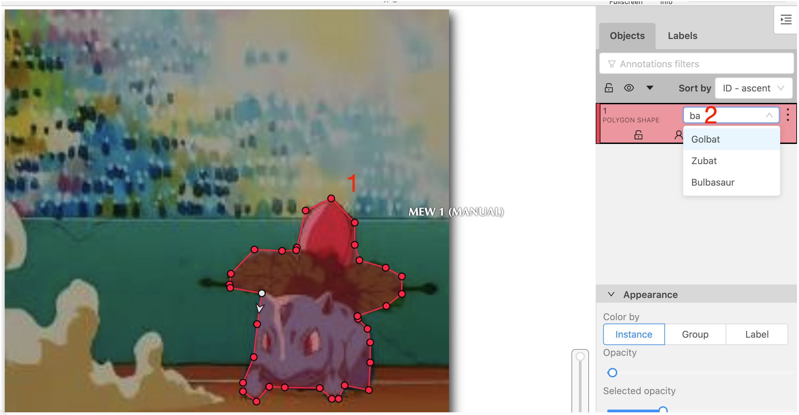

First of all login to the system with user anno and password ki5fUk746RYQ
After choosing and clinking on a task you want to tag, choose a job
Start creating shapes by choosing the shap tool
To start and finish new shape just click N
After drawing the shape (and clicking N to finish) choose the right label
If an image has multiple Pokemons, and after you done with a picture, click F to go to the next picture, and D to go back.